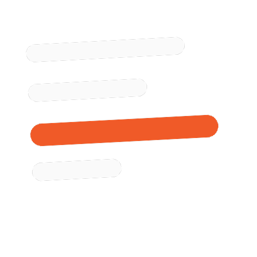

Bulletyn
AI-curated daily news brief for smart, busy people
Started as a hackathon MVP at CMU. Now a live product with real subscribers and zero unsubscribes.
An AI system that scans 90+ sources across 29 topics every night and delivers a personalized, role-specific news brief to your inbox at 7 AM.
Context
Built end-to-end as part of a week-long hackathon at CMU named Prodhacks. Continued post-hackathon into a live product. Responsible for product, engineering, AI pipeline, editorial, and brand. Solo.
The Problem
Staying informed today is cognitively expensive. 53% of Americans feel overwhelmed by the volume of news. The average person consumes from 6 different sources weekly, spending over 2 hours daily on social media, where algorithms optimize for clicks, not clarity.
- Check multiple platforms and aggregators daily.
- Open several articles on the same topic but abandon them halfway.
- Feel constant anxiety about missing something critical.
- Get generic headlines with no context for their specific role or focus.
Designed and shipped the full system: product, pipeline, and brand. Solo.
Automated pipeline scanning 90+ RSS feeds across 29 topic categories nightly AI enrichment generating role-specific "For You" insights per user per topic Four reading depth formats: Quick Scan, Tactical, Strategic, and Deep Reading Timezone-aware delivery at 7 AM to each subscriber's local time
Product Approach
Pull-based, not push-based. Bulletyn goes and gets the news so you don't have to.
Optimized for clarity over clicks. Signal over volume. Role-specific insight over generic headlines.
One subscription replaces 5 to 6 niche newsletters across 29 topic categories.
Outcomes
357 opens, week 1
13 active subscribers. 114 link click-throughs. $0 marketing spend.
Zero unsubscribes
100% delivery rate. Readers actively click through to sources.
Live and growing
Post-hackathon product at readbulletyn.com with a clear roadmap to 25K+ subscribers.
Research & Validation
The gap in the market
The pain isn't reading. The pain is filtering.
During customer discovery interviews at Prodhacks, we talked to university students and working professionals about their daily news habits. The conversations were informal but consistent: people don't need more content. They need signal, context, and impact. Every participant expressed frustration with bouncing between apps and newsletters to piece together what actually matters for their work or career.
What We Heard
User Journey
The broken loop before Bulletyn
Intent
Desire to stay informed on industry trends.
Hunt
Jump blindly across multiple sources and aggregators.
Fatigue
Scroll through filler content, mentally filtering noise, leading to fatigue.
Bulletyn compresses that entire journey into one structured delivery.
System Architecture
Three pipeline stages, each acting as an internal stage gate
1. Ingest & Cache
- Scheduled cron scans a curated set of RSS feeds across topic categories simultaneously.
- Quality filters and topic scoring surface only high-signal articles per topic.
2. Enrich & Personalize
- AI reads every subscriber profile, pulls chosen topics, generates role-specific "For You" insights per user.
- Briefs pre-rendered in the user's chosen format and stored. Zero AI calls at delivery time.
3. Deliver at 7 AM
- Delivery cron checks every 10 minutes for users whose local time hits 7 AM.
- Pre-built briefs sent via email. Timezone-aware, consistent, reliable.
Tech Stack
Market Context
Adjacent innovation in a $24B market
Bulletyn competes in a global news subscription market worth $24 billion. The category already has proof that people pay for curation: The New York Times built a $2.4B subscription business, and Substack proved that readers pay directly for focused, topic-specific newsletters.
Bulletyn sits at the intersection of both behaviors: paying for quality journalism and paying for curation. It does not replace subscriptions. It makes existing ones worth having.
Type of Innovation
Adjacent innovation
Uses existing trusted journalism. Applies AI to solve the integration problem, not the content problem.
vs. the Competition
Morning Brew
General businessSends the same content to everyone regardless of profession. Good tone, poor relevance at scale.
TLDR
Tech-focusedOptimizes for brevity, not insight. Tells you what happened, not why it matters for your role.
Google News / Social Feeds
Algorithm-drivenMore articles, not better articles. Engagement-optimized, not clarity-optimized. 53% of users still feel overwhelmed.
Bulletyn
Role-specificMultiple reading depths. Per-reader, per-topic AI insights every morning. Actionable, not just informational.
Go-to-Market
Three-phase concentric circle rollout, starting where feedback density is highest.
Community First
Start where feedback density is highest and iteration cycles are fastest. Build with users who are already required to synthesize information daily and can articulate exactly where the product fails them.
Peer-Driven Growth
In a high news-avoidance environment, product recommendations from trusted colleagues outperform any paid channel. Growth that compounds without ad spend.
Enterprise Layer
Information overload costs the global economy roughly $1 trillion annually in lost productivity. A per-seat B2B model turns an individual subscription into a team-level productivity tool.
Business Model
Capital-efficient with SaaS-grade margins
Free Tier
Core brief with limited topic selection. Designed to demonstrate value before asking for commitment.
Premium
Full topic customization, deeper AI analysis, and multiple reading formats. Individual subscription.
Enterprise
Per-seat B2B model. Briefings scoped to company context, industry verticals, and team-specific signals.
The pre-render architecture keeps variable costs low regardless of subscriber count. Margins improve with scale rather than degrading, which is the structural advantage of separating AI computation from delivery.
Live Project
Experience Bulletyn
See the live product. Sign up, pick your topics, and get your first brief tomorrow at 7 AM.
Personalization is the product.
Generic headlines are a solved problem. The real moat is knowing what a story means for this reader, in this role, right now. Every design and engineering decision in Bulletyn optimizes for that one thing.